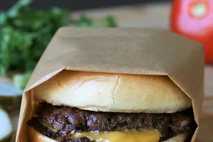

Home Made Smash Burger

Description
As I am writing this, I had just devoured 3 chicken burritos from taco
bell and I am unable to provide a compelling description for this
otherwise appetizing recipe. Nevertheless, had my stomach been empty, this
recipe would not be my first pick for a hearty and wholesome meal but
maybe after a long and tiresome week, I think I would be deserving of this
gluttonous meal.
Ingredients
- 4 hamburger buns
- 2 tbsp of butter
- 1 lb ground chuck beef
- 4-6 in squares parchment paper
- salt
- 4 slices of American cheese
- burger topping of choice
Steps
-
Preheat an outdoor grill for high heat and lightly oil the grate. Set a
cast iron flat-top griddle or large cast iron skillet onto the grill and
preheat until smoking.
-
Spread butter on the inside of the buns and toast on the flat-top until
lightly browned. Set aside.
-
Form meat into 8 loosely-packed balls, 2 ounces each. Do not pack the
meat tightly, as this will prevent it from smashing properly. Place each
ball on the hot flat-top, cover with a piece of parchment (to prevent
sticking to the spatula; re-use each parchment square on a second patty)
and immediately smash down to a 1/4 inch thickness using 2 stiff, sturdy
spatulas that are criss-crossed to get proper leverage as you press
down. You may also use the bottom of small skillet. Sprinkle the meat
with salt.
-
Grill for about 45 seconds, until the edges are dark brown and the
centers are a light pink color. Using a bench scraper or firm spatula,
gently scrape up the patties, flip over and immediately cover 4 of them
with cheese. Grill an additional 15 to 20 seconds; stack the plain
patties over the cheese-covered patties so you have 4 stacks. Move each
stack to a bun and serve with your favorite toppings.